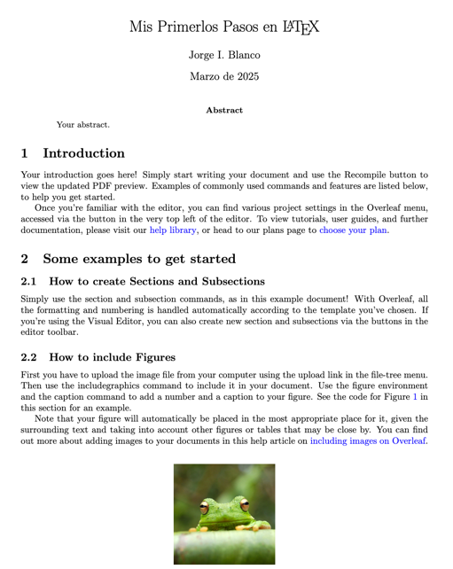

<div class="row">
    <div class="col-md-12 p-4">
        <h1 class="animate__animated animate__fadeInBottomRight animate__delay-1s" style="text-align: center; color: #7d1541;">CREACIÓN DE DOCUMENTOS PROFESIONALES CON LATEX</h1>
        <div class="row mt-4 d-flex align-items-center">
            <div class="col-md-6">
                <p class="texto animate__animated animate__fadeInBottomLeft animate__delay-3s">
                    <b>Introducción a LaTeX</b>:
                    LaTeX es un sistema de composición de documentos orientado a la   
                    creación de textos técnicos y científicos. Permite estructurar 
                    documentos con elementos como secciones, imágenes y ecuaciones matemáticas.<!-- <b>&sigma; = E&epsilon;</b> -->
                </p>
                <p class="texto animate__animated animate__bounceInDown animate__delay-4s">
                    <b>Usos:</b> Muy utilizado en publicaciones científicas y técnicas.
                </p>
            </div>
            <div class="col-md-6">
                
            </div>
        </div>
    </div>
</div>